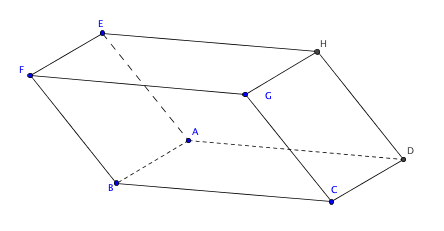

Exercices corrigés - Barycentres
Enoncé 
A l'aide des barycentres, démontrer que les trois médianes d'un triangle sont concourantes et retrouver la position du centre de gravité sur les médianes.

Enoncé
Soit $A,B,P$ trois points distincts du plan tels que $P$ soit sur le segment $[AB]$. Écrire $P$ comme barycentre de $A$ et $B$ avec des coefficients s'écrivant en fonction des distances $PA$, $PB$.
Enoncé
- On note $z_1,z_2,z_3$ les trois racines dans $\mathbb C$ du polynôme $P(z)=z^3-4z+8\sqrt 2$ et $A_1,A_2,A_3$ les points du plan complexe d'affixes respectives $z_1,z_2$ et $z_3$. Quel est l'affixe de l'isobarycentre de $A_1$, $A_2$ et $A_3$?
- Soit $A,B$ et $C$ trois points du plan. Déterminer les points $M$ du plan tels que $\overrightarrow{MA}-2\overrightarrow{MB}+\overrightarrow{MC}=\overrightarrow{0}$.
Enoncé
Soit $A,B,C$ trois points du plan. Déterminer les points $M$ du plan tels que
$$\left\|2\overrightarrow{MA}-\overrightarrow{MB}+2\overrightarrow{MC}\right\|=
\left\|\overrightarrow{MA}+\overrightarrow{MB}+\overrightarrow{MC}\right\|.$$
Enoncé
Dans un tétraèdre $ABCD$, on désigne par $I,J,K,L,M$ et $N$ les milieux des arêtes $[AB]$, $[BC]$, $[CD]$, $[DA]$, $[AC]$ et $[BD]$ et par $G_1,G_2,G_3$ et $G_4$ les centres de gravité des triangles $BCD$, $CDA$, $ABD$ et $ABC$. Démontrer que les sept droites $(AG_1)$, $(BG_2)$, $(CG_3)$, $(DG_4)$, $(IK)$, $(JL)$ et $(MN)$ sont concourantes.
Enoncé
On considère un tétraèdre $ABCD$ et les points $S,T,U$ et $V$ définis par
$$\begin{array}{lll}
\overrightarrow{AS}=\frac 12\overrightarrow{AB}&\quad&\overrightarrow{DT}=\frac 12\overrightarrow{DC}\\
\overrightarrow{AU}=\frac 13\overrightarrow{AD}&\quad&\overrightarrow{BV}=\frac 13\overrightarrow{BC}
\end{array}$$
Démontrer que les points $S,T,U$ et $V$ sont coplanaires.
Exercice 7 - Barycentre des sommets d'un triangle ♡ [Signaler une erreur] [Ajouter à ma feuille d'exos]
Enoncé
Soit $ABC$ un triangle, $\alpha,\beta,\gamma,\alpha',\beta',\gamma'$ des réels tels que $\alpha+\beta+\gamma\neq 0$ et $\alpha'+\beta'+\gamma'\neq 0$. On considère $M$ le barycentre de $(A,\alpha)$, $(B,\beta)$ et $(C,\gamma)$, puis $M'$ le barycentre de $(A,\alpha')$, $(B,\beta')$, $(C,\gamma')$. Démontrer que $M=M'$ si et seulement si les vecteurs $(\alpha,\beta,\gamma)$ et $(\alpha',\beta',\gamma')$ sont colinéaires. Ce résultat subsiste-t-il si on considère le barycentre de 4 points?
Enoncé
Étant donnés deux points $A$ et $B$ du plan et $k$ un réel strictement positif, on désigne par $\Gamma_k$ l'ensemble des points $M$ du plan distincts de $B$ et tels que $\frac{MA}{MB}=k$.
- Rappeler la nature de $\Gamma_1$.
- On suppose désormais que $k\neq 1$. Démontrer que $M$ appartient à $\Gamma_k$ si et seulement si le produit scalaire $(\overrightarrow{MA}+k\overrightarrow{MB}).(\overrightarrow{MA}-k\overrightarrow{MB})$ est nul.
- En déduire que $\Gamma_k$ est un cercle dont on précisera le diamètre.
- Application : soit $ABC$ un triangle non isocèle en $C$ et, sur la parallèle en $B$ à $(AC)$, les points $C_1$ et $C_2$ tels que $BC_1=BC_2=BC$. Démontrer que $(CC_1)$ et $(CC_2)$ sont sécantes avec $(AB)$ en des points notés $I$ et $J$. Démontrer que l'ensemble des points $M$ du plan tels que $\frac{MA}{MB}=\frac{CA}{CB}$ est le cercle de diamètre $[IJ]$.
Exercice 9 - Une propriété du centre de gravité d'un triangle ♡ [Signaler une erreur] [Ajouter à ma feuille d'exos]
Enoncé
Le but de l'exercice est de déterminer une propriété remarquable du centre de gravité d'un triangle à l'aide des barycentres. On commence par fixer un triangle $ABC$ du plan.
- Soit $M$ un point distinct de $A,B,C$. On suppose que $M$ est le barycentre de $(A,\alpha)$, $(B,\beta)$ et $(C,\gamma)$ avec donc $\alpha+\beta+\gamma\neq 0$. Démontrer que les droites $(AM)$ et $(BC)$ sont parallèles si et seulement si $\beta+\gamma=0$.
- On se donne $P,Q,R$ trois points respectivement sur les droites $(BC)$, $(CA)$ et $(AB)$, distincts des sommets. Démontrer que les droites $(AP)$, $(BQ)$ et $(CR)$ sont concourantes si et seulement s'il existe des réels $\alpha,\beta,\gamma$ tels que
- $\alpha+\beta+\gamma\neq 0$;
- $\beta+\gamma\neq 0$ et $P$ est le barycentre de $(B,\beta)$ et de $(C,\gamma)$;
- $\gamma+\alpha\neq 0$ et $Q$ est le barycentre de $(C,\gamma)$ et de $(A,\alpha)$;
- $\alpha+\beta\neq 0$ et $R$ est le barycentre de $(A,\alpha)$ et de $(B,\beta)$.
- On suppose désormais que les droites $(AP)$, $(BQ)$ et $(CR)$ sont concourantes en $M$ point intérieur du triangle. On note $H$ et $h$ les distances respectives de $A$ et $M$ à la droite $(BC)$. Établir que $$\textrm{aire}(MCA)=\frac 12(H-h)\times PC$$ $$\textrm{aire}(MAB)=\frac 12(H-h)\times PB.$$ En déduire que $P$ est le barycentre de $(B,\textrm{aire}(MCA))$ et de $(C,\textrm{aire}(MAB))$, puis que $M$ est le barycentre de $(A,\textrm{aire}(MBC))$, $(B,\textrm{aire}(MCA))$ et de $(C,\textrm{aire}(MAB))$.
- Quelle propriété remarquable du centre de gravité d'un triangle vient-on de démontrer?
- Démontrer que le centre du cercle inscrit au triangle $ABC$ est le barycentre de $(A,a)$, $(B,b)$ et $(C,c)$ où $a=BC$, $b=CA$ et $c=AB$.
Enoncé
- Soit $PQRS$ un parallélogramme. Écrire $S$ comme un barycentre de $P,Q$ et $R$.
- Soit $ABCDEFGH$ un parallélépipède. Démontrer que la droite $(AG)$ coupe le plan $(BDE)$ en un point $I$ tel que
- $I$ est le centre de gravité du triangle $BDE$;
- $I$ est le point du segment $[AG]$ tel que $AI=\frac 13AG$.

Enoncé
Une partie $\mathcal A$ du plan est dite convexe si, pour tous $A,B\in\mathcal A$, alors le segment $[AB]$ est contenu dans $\mathcal A$.
- Démontrer que l'intersection de parties convexes est convexe.
- En déduire que pour tout partie $\mathcal A$ du plan, il existe un plus petit (au sens de l'inclusion) convexe la contenant. On appelle cette partie l'enveloppe convexe de $\mathcal A$.
- Soit $\mathcal A=\{A_1,\dots,A_p\}$. Démontrer que l'enveloppe convexe de $\mathcal A$ est l'ensemble des barycentres des points $A_1,\dots,A_p$ à coefficients positifs.